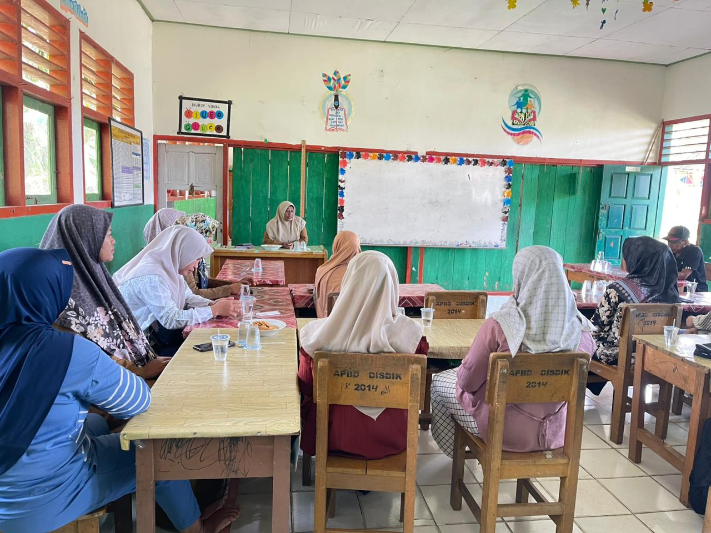

Lembaga Pendidikan di Desa Cinta Damai
Sekolah didirikan sebagai **SDN 169/V Cinta Damai** untuk memberikan akses pendidikan di Desa Cinta Damai, Kecamatan Renah Mendaluh, Tanjung Jabung Barat.
Tantangan utama adalah kesulitan akses transportasi dan kebutuhan sarana-prasarana.

Kemitraan dengan Tanoto Foundation
Melalui **Program PINTAR**, kemitraan ini meningkatkan profesionalisme guru, minat baca siswa, dan perbaikan fasilitas sekolah.
Prestasi Akademik dan Kualitas Guru
SDN 169/V meraih berbagai penghargaan di tingkat kabupaten dan provinsi serta mencapai hasil **UKG di atas standar nasional**. Selain itu dari pertama mengikuti penilaian akreditasi hingga tahun 2029 berhasil mempertahankan nilai akreditasi A
Kemitraan Mandiri dengan Komunitas
Membangun kemitraan kuat dengan Pemerintah Desa, Puskesmas, KUD, dan perusahaan setempat untuk mendukung kemajuan sekolah.
Perubahan Identitas Resmi
Sebagai bagian dari penataan nomenklatur sekolah, mulai tahun 2024, sekolah resmi berganti nama dari **SDN 169/V Cinta Damai** menjadi **SDN 165 Tanjung Jabung Barat**.
Perubahan nama ini menandai babak baru komitmen dalam peningkatan mutu pendidikan daerah.
Fokus Pembelajaran Aplikatif SDN 165
SDN 165 terus fokus pada kegiatan aplikatif bagi siswa, seperti **wawancara dengan pedagang di pasar** sebagai bagian dari pembelajaran di luar kelas, mencerminkan sekolah yang proaktif dan modern.